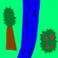
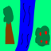

Here are five image samples from using iterative denoising
on random images.
Sample 1Sample 2Sample 3Sample 4Sample 5
1.6: Classifier-Free Guidance (CFG)
Here are five image samples from using iterative denoising
with classifier-free guidance on random images.
Sample 1Sample 2Sample 3Sample 4Sample 5
1.7: Image-to-Image Translation
Here are the results of applying denoising with CFG to images that have
different amounts of noise. The original image (after preprocessing)
is on the right for reference.
SDEdit with i_start=1SDEdit with i_start=3SDEdit with i_start=5SDEdit with i_start=7SDEdit with i_start=10SDEdit with i_start=20Original Image
SDEdit with i_start=1SDEdit with i_start=3SDEdit with i_start=5SDEdit with i_start=7SDEdit with i_start=10SDEdit with i_start=20Original Image
SDEdit with i_start=1SDEdit with i_start=3SDEdit with i_start=5SDEdit with i_start=7SDEdit with i_start=10SDEdit with i_start=20Original Image
1.7.1: Editing Hand-Drawn and Web Images
Here are results of the same procedure done on a web image and some drawings.
As was the case above, the original (preprocessed) image is on the right.
SDEdit with i_start=1SDEdit with i_start=3SDEdit with i_start=5SDEdit with i_start=7SDEdit with i_start=10SDEdit with i_start=20Original Image
SDEdit with i_start=1SDEdit with i_start=3SDEdit with i_start=5SDEdit with i_start=7SDEdit with i_start=10SDEdit with i_start=20Original Image
SDEdit with i_start=1SDEdit with i_start=3SDEdit with i_start=5SDEdit with i_start=7SDEdit with i_start=10

SDEdit with i_start=20

Original Image
1.7.2: Inpainting
Here are results from inpainting.
CampanileMaskHole to FillCampanile Inpainted
CatMaskHole to FillCat Inpainted
CakeMaskHole to FillCake Inpainted
1.7.3 Text-Conditional Image-to-image Translation
Here are the results of SDEdit on the images with a guiding prompt.
The prompt for first row is "a pencil." The prompt for the second row
is "a man wearing a hat". The prompt for the third row is
"a photo of an apple".
SDEdit with i_start=1SDEdit with i_start=3SDEdit with i_start=5SDEdit with i_start=7SDEdit with i_start=10SDEdit with i_start=20Original Image
SDEdit with i_start=1SDEdit with i_start=3SDEdit with i_start=5SDEdit with i_start=7SDEdit with i_start=10SDEdit with i_start=20Original Image
SDEdit with i_start=1SDEdit with i_start=3SDEdit with i_start=5SDEdit with i_start=7SDEdit with i_start=10SDEdit with i_start=20Original Image
1.8: Visual Anagrams
Here are two visual anagrams. The prompts are under
the corresponding images. Note that images on the same row
are related by a rotation of 180 degrees.
An Oil Painting of an Old ManAn Oil Painting of people around a Campfire
A Rocket ShipA Pencil
1.9: Hybrid Images
Here are two hybrid images generated. For the first image, the
prompt is "a lithograph of a skull" for low frequencies and
"a lithograph of waterfalls" for high frequencies. For the second
image, the prompt is "a photo of an apple" for low frequencies
and "a photo of an orange" for high frequencies.